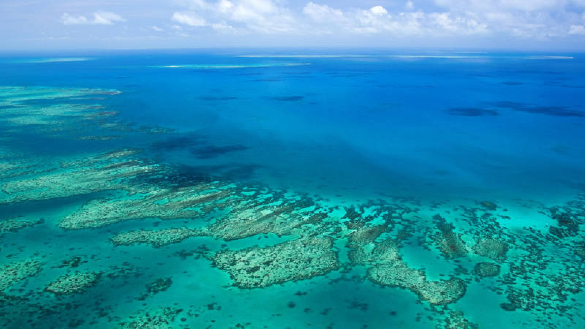

Acerca de la Gran Barrera de Coral
La Gran Barrera de Coral es como una ciudad en el fondo del mar. Está llena de corales, que parecen plantas pero son animales muy pequeños que trabajan juntos para construir su hogar. Aquí viven peces de colores, tortugas y hasta tiburones. Los corales son muy importantes porque cuidan a los animales marinos y mantienen el océano sano. Sin embargo, necesitan nuestra ayuda, porque se pueden enfermar si el agua está sucia o demasiado caliente.
Actividades
- Collares de corales: Con cuentas de colores, hagan collares y hablen sobre cómo los corales construyen su hogar con colores vibrantes.
- Juego de memoria: Crea tarjetas con dibujos de animales marinos para jugar a encontrar las parejas.